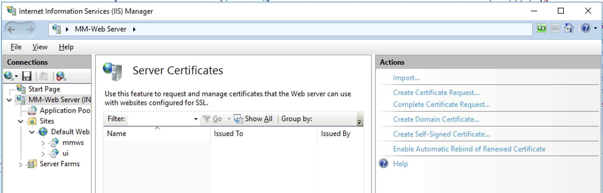
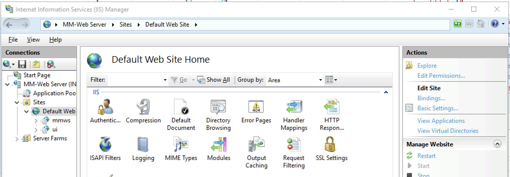
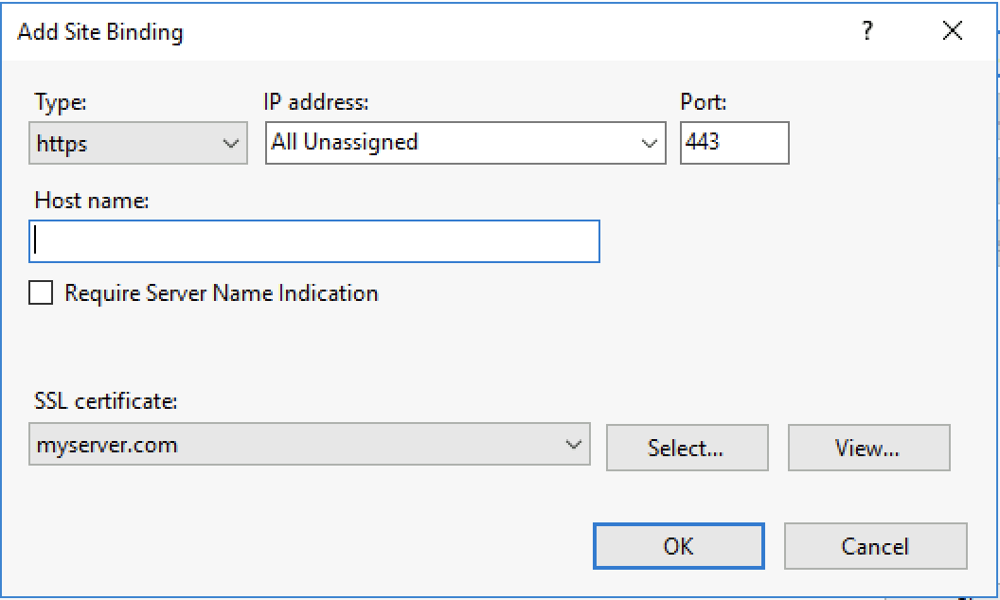
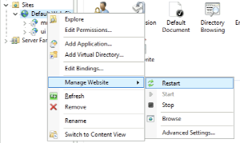
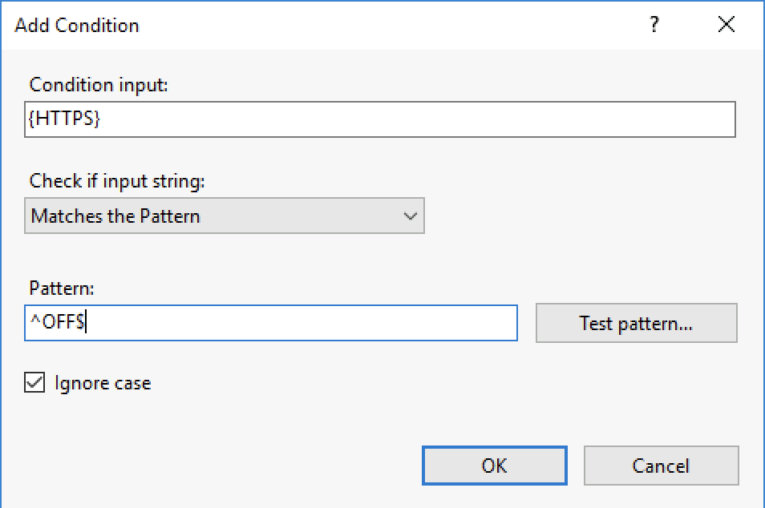

Setup SSL for the Web Application
SSL on Linux (Apache)
By default, the Web Application uses unencrypted http connection on port 80. To use it with https on port 443, follow these steps.
Check that mod_ssl for Apache is installed:
yum install mod_ssl
If you have existing SSL key files: place the .key file in /etc/pki/tls/private/ and the .crt and .csr files in /etc/pki/tls/certs/.
If you need new SSL keys, generate a keypair:
openssl req -new -nodes -keyout mmweb.key -out mmweb.csr -newkey rsa:4096
Create self-signed certificate:
openssl x509 -req -days 365 -in mmweb.csr -signkey mmweb.key -out externaldns3.crt
Place the files in the appropriate directories:
cp mmweb.key /etc/pki/tls/private/
cp mmweb.c* /etc/pki/tls/certs/
Once the keyfiles are placed in their respective directories, edit the mmweb.conf file in the Apache configuration directory (default /etc/httpd/conf, or use find /etc/ -name “mmweb.conf” to locate the file) with the following changes:
change
<VirtualHost *:80>to<VirtualHost *:443>add in the references to the key files (amend the path as necessary):
SSLCertificateFile /etc/pki/tls/certs/mmweb.crt
SSLCertificateKeyFile /etc/pki/tls/private/mmweb.key
enable SSL:
SSLEngine on
SSLProtocol all -SSLv2 -SSLv3
SSLCipherSuite HIGH:3DES:!aNULL:!MD5:!SEED:!IDEA
Note
The default Apache installation may already have a <VirtualHost _default_:443> directive, which can conflict with the mmweb.conf file.
Comment out this existing VirtualHost block to prevent any errors.
To verify the Web Application is accessible, navigate to https://web-application.domain.tld. The Men&Mice Web Application’s login panel should appear.
SSL on Windows (IIS)
Configuring SSL Certificate
Open the IIS (Internet Information Services) Manager
Select the Web Server node in the left sidebar, under “Start Page”, and double click on Server Certificates in the middle pane
{kind=link}
Choose one of the actions in the actions sidebar on the left to import an existing .pfx SSL certificate, or create a self-signed certificate. If your certificate is in a different format than .pfx, please refer to documentation and/or tools that certificate authorities typically provide to convert their certificates to Microsoft’s .pfx format
Select your website under Sites in the left sidebar (usually Default Web Site) , and click Bindings… in the Actions sidebar on the right.
{kind=link}
In the Site Bindings dialog that opened, click Add, select https from the Type menu, and then select the certificate added in step 3 in the SSL certificate picklist. Then click OK.
{kind=link}
The “Host Name” and “Require Server Name Indication” can be left blank if this the first certificate installed on the server.
Redirect HTTP traffic to HTTPS
Editing web.config
Locate and open the web.config file for your Default Website in notepad. This is typically at C:inetpubwwwrootweb.config
Add the following rule xml to the rewrite > rules section of the xml, at the top below <clear />
<rule name="HTTP to HTTPS redirect" enabled="true" stopProcessing="true">
<match url="(.*)" />
<conditions logicalGrouping="MatchAll" trackAllCaptures="false">
<add input="{HTTPS}" pattern="^OFF$" />
</conditions>
<action type="Redirect" url="https://{HTTP_HOST}/{R:1}" appendQueryString="true" redirectType="Permanent" />
</rule>
In the IIS manager, select the Default Web site, right click, and select to make the changes to the web.config take effect.
{kind=link}
With Default Web Site selected in the left sidebar, double click on URL Rewrite in the middle pane. Verify the rule HTTP to HTTPS redirect is at the top of the rewrite rules
Using the IIS manager
With Default Web Site selected in the left sidebar, double click on URL Rewrite in the middle pane
If there’s a HTTP to HTTPS redirect rule already in place at the top of the list of URL rewrite rules, nothing needs to be done.
Click Add Rules in the Actions pane on the right, and click OK to create a blank inbound rule.
In the name field enter HTTP to HTTPS redirect.
In Pattern field enter (.*)
Under conditions click Add and enter the following condition:
{kind=link}
In the Action pane on the bottom, choose Redirect from the Action type dropdown, and set redirect URL to https://{HTTP_HOST}/{R:1} and the redirect type to Permanent (301).
{kind=link}
Click Apply in the Actions pane on the left. And click Back to rules.
Move the new HTTP to HTTPS redirect rule to the top of the rules using the Move Up button in the action pane on the right.